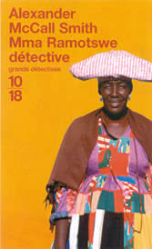

|
 |


|
|
|
||||
 |
|
|
| CHAPITRE PREMIER : Le Papa
|
||
| Mma Ramotswe possédait une agence de détectives
en Afrique, au pied du mont Kgale. Voici les biens dont elle disposait
: une toute petite fourgonnette blanche, deux bureaux, deux chaises,
un téléphone et une vieille machine à écrire.
Il y avait en outre une théière, dans laquelle Mma Ramotswe
(seule femme détective privée du Botswana) préparait
du thé rouge. Et aussi trois tasses : une pour elle, une pour
sa secrétaire et une pour le client. De quoi d'autre une agence
de détectives pourrait-elle avoir besoin ? Le métier de
détective repose sur l'intelligence et l'intuition humaines,
et Mma Ramotswe possédait l'une et l'autre en abondance. Bien
sûr, ce genre de chose ne figurerait jamais dans aucun inventaire... Il y avait la vue aussi, mais elle non plus ne pouvait apparaître dans un inventaire. Comment une simple liste eût-elle décrit ce que l'on voyait de la porte de Mma Ramotswe ? Au premier plan, un acacia, cet épineux qui parsème les abords sauvages du Kalahari : longues épines blanches pour mettre en garde, feuilles gris-olive qui contrastent, délicates. Parmi ses branchages, en fin d'après-midi ou dans la fraîcheur du petit matin, on pouvait voir - ou plutôt entendre - un touraco vert. Et derrière l'acacia, par-delà la route poussiéreuse, les toits de la ville, sous une couverture d'arbres et de brousse. A l'horizon, dans le chatoiement azur des brumes de chaleur, les collines, telles d'improbables termitières géantes. Tout le monde l'appelait Mma Ramotswe, mais s'ils avaient voulu respecter les convenances, les gens se seraient adressés à elle en disant Mme Mma Ramotswe. Telle est la formulation adéquate pour une personne respectable, mais même elle ne l'avait jamais employée. Ainsi était-elle toujours Mma Ramotswe, et non pas Precious Ramotswe, un prénom que très peu de gens utilisaient. C'était une bonne enquêtrice et une femme de bien. Une femme de bien dans un pays de bien, pourrait-on dire. Elle aimait son pays, le Botswana, qui était une terre de paix, et elle aimait l'Afrique pour toutes ses vicissitudes. Je n'ai pas honte d'être qualifiée de patriote africaine, disait Mma Ramotswe. J'aime tous les peuples que Dieu a créés, mais je sais tout spécialement comment aimer celui qui vit ici. C'est mon peuple, ce sont mes frères et mes sœurs. Il est de mon devoir de les aider à élucider les mystères de leur existence. Telle est ma vocation. Dans ses moments d'oisiveté, lorsqu'il n'y avait aucune affaire pressante à traiter et que tout le monde semblait s'alanguir sous l'effet de la chaleur, elle s'asseyait sous l'acacia. L'endroit était poussiéreux et les poules venaient par moments picorer à ses pieds, mais c'était un lieu qui favorisait la réflexion. Là, Mma Ramotswe méditait sur certaines questions que l'on a tendance, dans la vie de tous les jours, à mettre de côté. Tout, pensait Mma Ramotswe, a été quelque chose par le passé. Moi-même, je suis ici, seule femme détective de tout le Botswana, assise devant mon agence. Mais il y a quelques années à peine, il n'y avait pas d'agence de détectives à cet endroit, et avant cela, il n'y avait même pas de maison, il n'y avait que des acacias, et le lit du fleuve à côté, et le Kalahari là-bas, si proche... En ce temps-là, il n'y avait même pas de Botswana, mais seulement le protectorat du Bechuanaland, et avant cela encore, le territoire de Khama, et puis des lions, avec le vent sec qui soufflait dans leurs crinières. Mais regardez à présent : une agence de détectives, ici à Gaborone, et moi, la grosse dame détective, assise devant la porte et plongée dans cette réflexion sur la façon dont ce qui est une chose aujourd'hui deviendra tout à fait autre chose demain. Mma Ramotswe avait créé l'Agence N° 1 des Dames Détectives avec le fruit de la vente du bétail de son père. Celui-ci possédait un important troupeau et il n'avait pas d'autre enfant, de sorte que toutes les bêtes, soit cent quatre-vingts au total, y compris les grands taureaux brahmin blancs dont il élevait déjà les grands-parents, étaient revenues à Mma Ramotswe. On avait transféré le bétail à Mochudi, où il avait attendu dans la poussière, sous la surveillance de petits vachers dissipés, l'arrivée de l'agent du cheptel. Le troupeau dégagea une jolie somme, car il y avait eu de fortes pluies cette année-là et l'herbe avait bien poussé. Si la vente s'était faite un an plus tôt, alors que le sud de l'Afrique dépérissait sous la sécheresse, c'eût été une autre histoire. A l'époque, tout le monde hésitait, s'accrochant jusqu'au bout à ses bêtes, puisque chacun sait que, sans bétail, nous sommes nus. Les plus désespérés avaient fini par vendre, parce qu'ils constataient que les pluies se raréfiaient depuis plusieurs années déjà et que les animaux maigrissaient. Mma Ramotswe se réjouissait que la maladie de son père eût empêché celui-ci de prendre une telle décision, car, désormais, les prix remontaient et ceux qui avaient tenu bon se voyaient récompensés. - Je veux que tu aies une affaire bien à toi, lui avait-il dit sur son lit de mort. Tu obtiendras un bon prix du troupeau maintenant. Vends-le et achète-toi un magasin. Une boucherie, pourquoi pas ? Ou un débit de boissons. A toi de choisir. Elle tenait la main de son père et regardait au fond des yeux l'homme qu'elle aimait plus que tout autre, son Papa, son très sage Papa, qui s'était empli les poumons de poussière dans les mines et avait économisé sur tout pour offrir une belle vie à sa fille. Bien qu'elle peinât à parler à travers ses larmes, elle parvint à articuler : - Je vais ouvrir une agence de détectives. A Gaborone. Ce sera la meilleure du Botswana. L'Agence N° 1. Pendant quelques instants, son père ouvrit de grands yeux et sembla lutter pour dire quelque chose. - Mais... Mais... Il mourut avant d'avoir pu préciser sa pensée, et Mma Ramotswe s'effondra sur sa poitrine, pleurant la dignité, l'amour et les souffrances qui s'éteignaient avec lui. Elle fit confectionner une pancarte aux couleurs vives, qu'elle installa à l'angle de Lobatse Road, en bordure de ville, pointée sur la petite maison qu'elle avait achetée : AGENCE N° 1 DES DAMES DETECTIVES. TOUTES ENQUETES ET AFFAIRES CONFIDENTIELLES. SATISFACTION GARANTIE POUR TOUTES LES PARTIES. PROPRIETAIRE GERANTE. L'ouverture de l'agence suscita un intérêt considérable parmi le public. Mma Ramotswe eut droit à une interview sur Radio Botswana, où elle estima qu'on la pressait un peu trop rudement de révéler ses qualifications, et un article plus satisfaisant dans le Botswana News, qui attirait l'attention sur le fait qu'elle était la seule femme détective privée du pays. L'article fut découpé, photocopié et exposé en évidence dans un petit cadre, à côté de la porte d'entrée de l'agence. Après un démarrage assez lent, Mma Ramotswe eut la surprise de découvrir que ses services répondaient à un besoin considérable. Elle fut consultée pour retrouver des maris disparus, étudier la crédibilité financière d'associés potentiels ou enquêter sur des employés indélicats. A chaque client ou presque, elle parvenait au moins à fournir des renseignements précieux. Les rares fois où elle échouait, elle refusait d'être payée, si bien qu'aucun de ceux qui firent appel à elle ne trouva à redire. Les gens du Botswana aimaient parler, découvrit-elle, et il lui suffisait de mentionner sa profession pour obtenir une incroyable profusion d'informations sur toutes sortes de sujets. Les gens trouvaient flatteur, conclut-elle, d'être approchés par un détective privé et, du coup, les langues se déliaient. Cela se vérifia avec Happy Bapetsi, l'une de ses premières clientes. Pauvre Happy ! Avoir perdu, puis retrouvé son père, pour le perdre de nouveau... - Je menais une existence heureuse, expliqua Happy Bapetsi. Très heureuse. Et puis, cette chose est arrivée et, maintenant, je ne peux plus en dire autant. Mma Ramotswe considéra sa cliente et but une gorgée de thé rouge. Tout ce que l'on a envie de savoir sur une personne est inscrit sur son visage, pensait-elle. Ce n'était pas la forme de la tête qui comptait, contrairement à ce que croyaient beaucoup de gens. Il s'agissait plutôt d'examiner avec soin les rides d'expression et l'aspect général. Et puis les yeux, bien sûr. Les yeux étaient très importants. Ils permettaient de regarder à l'intérieur de la personne, de pénétrer son essence même, et c'était pour cette raison que les individus qui avaient quelque chose à cacher portaient des lunettes noires même à l'intérieur. Il importait d'examiner ces gens-là avec la plus grande attention. Cette Happy Bapetsi était intelligente, on le devinait au premier coup d'œil. Par ailleurs, elle avait peu de soucis : cela apparaissait dans l'absence de rides sur son visage, hormis celles du sourire, bien sûr. Le problème qui l'amène vient donc d'un homme, conclut Mma Ramotswe. Un homme a surgi et tout gâché, détruisant le bonheur de Happy par sa mauvaise conduite. - Laissez-moi d'abord vous parler un peu de moi, dit Happy Bapetsi. Je suis née à Maun, vous savez, sur le delta de l'Okavango. Ma mère tenait un petit magasin et je vivais avec elle dans l'arrière-boutique. Nous avions beaucoup de poules et nous étions heureuses. Ma mère m'avait expliqué que mon père était parti bien des années plus tôt, quand j'étais encore bébé. Il était allé travailler à Bulawayo et n'était jamais revenu. Quelqu'un nous avait écrit (un autre Motswana émigré là-bas) pour nous dire qu'il pensait que Papa était mort, mais qu'il n'en était pas sûr. Il expliquait qu'un jour, en allant voir un malade à l'hôpital de Mpilo, il était passé dans un couloir où il avait vu un chariot que l'on poussait. Selon lui, le mort du chariot ressemblait étonnamment à Papa. Mais il ne pouvait avoir aucune certitude. " Nous avons donc conclu qu'il était mort, mais ma mère n'a pas été triste, parce qu'elle ne l'avait jamais beaucoup aimé. Quant à moi, bien sûr, je ne me souvenais pas de lui, alors cela ne faisait pas tellement de différence. " Je suis allée à l'école à Maun, dans un établissement tenu par des missionnaires catholiques. L'un d'eux s'est aperçu que je me débrouillais plutôt bien en arithmétique et il a passé beaucoup de temps à m'aider à apprendre. Il disait qu'il n'avait jamais vu une fille compter aussi bien. " Cela devait être très étonnant, j'imagine. Je voyais un groupe de chiffres et je les retenais tous. Ensuite, je m'apercevais que j'avais additionné tous ces chiffres dans ma tête, sans y penser. Cela me venait très facilement... Je n'avais même pas besoin de faire d'efforts. " J'ai réussi mes examens et, à la fin de ma scolarité, je suis partie à Gaborone pour étudier la comptabilité. Là encore, tout était simple pour moi : j'étais capable de lire une page entière de chiffres et de tout comprendre aussitôt. Ensuite, le lendemain, je me rappelais exactement tous les chiffres et je les réécrivais au besoin. " J'ai trouvé un travail à la banque et j'ai obtenu promotion sur promotion. Aujourd'hui, j'ai un poste de premier sous-comptable et je ne pense pas pouvoir aller plus loin, car tous les hommes ont peur de paraître idiots à côté de moi. Mais cela m'est égal. Je gagne un très bon salaire et je peux terminer ma journée de travail à trois heures de l'après-midi, parfois même plus tôt. Alors je vais faire des courses. J'ai une jolie maison de quatre pièces et je suis très heureuse. Avoir déjà tout ça à trente-huit ans, c'est bien, je trouve. Mma Ramotswe sourit. - Tout cela est très intéressant, dit-elle. Vous avez raison. C'est une belle réussite. - J'ai beaucoup de chance, acquiesça Happy Bapetsi. Seulement maintenant, il y a cette chose qui est arrivée. Mon Papa est venu à la maison. Mma Ramotswe en eut le souffle coupé. Elle ne s'attendait pas à ça. Jusque-là, elle était convaincue qu'il s'agissait d'une histoire sentimentale. Les pères posaient un problème tout à fait différent. - Il a frappé à ma porte, poursuivit Happy Bapetsi. C'était un samedi après-midi et je faisais la sieste dans ma chambre lorsque je l'ai entendu. Je me suis levée, je suis allée ouvrir et j'ai vu cet homme, qui devait avoir une soixantaine d'années, debout avec son chapeau dans les mains. Il m'a dit qu'il était mon Papa et qu'il avait vécu très longtemps à Bulawayo, mais qu'il était maintenant de retour au Botswana et qu'il était venu me voir. " Vous imaginez le choc que cela m'a fait. Il a fallu que je m'asseye, parce que, sinon, je crois que je me serais évanouie. Entre-temps, il s'était remis à parler. Il m'a dit le nom de ma mère, qui était correct, et il a expliqué qu'il était désolé de ne pas avoir donné signe de vie plus tôt. Ensuite, il m'a demandé s'il pouvait loger dans une des chambres inoccupées, parce qu'il n'avait pas d'endroit où aller. " J'ai dit oui, bien sûr. D'une certaine façon, j'étais très heureuse de voir mon Papa, et j'ai pensé que ce serait bien de pouvoir rattraper toutes ces années perdues en l'installant chez moi, d'autant que ma pauvre mère était morte. J'ai donc fait un lit pour lui dans une chambre et je lui ai préparé un bon repas - du steak et des pommes de terre -, qu'il a mangé très vite. Quand il a terminé son assiette, il en a redemandé. " Cela s'est passé il y a trois mois. Depuis, il vit dans cette chambre et je fais tout le travail pour lui. Je lui prépare son petit déjeuner, son déjeuner, que je laisse à la cuisine, et puis son dîner, chaque soir. Je lui achète une bouteille de bière par jour et je lui ai aussi payé des vêtements neufs et une paire de bonnes chaussures. Lui, il se contente de rester assis dans son fauteuil devant la porte et de me dire ce que je dois faire d'autre pour lui. - Beaucoup d'hommes sont comme ça, fit remarquer Mma Ramotswe. Happy Bapetsi hocha la tête. - Celui-là surtout. Il n'a pas lavé une seule casserole depuis son arrivée et je commence à être très fatiguée de m'occuper de lui comme ça. Et puis, il dépense beaucoup d'argent en vitamines et en biltong . " Cela ne me dérangerait pas, vous comprenez, s'il n'y avait pas un petit détail qui me chiffonne : en fait, je ne pense pas que ce soit mon véritable père. Je n'ai aucun moyen de le prouver, mais je crois que cet homme est un imposteur. Il a dû apprendre l'existence de notre famille de la bouche de mon vrai Papa avant sa mort et, maintenant, il se fait passer pour lui. Ce que je crois, c'est que ce monsieur cherchait une maison pour sa retraite et qu'il est très content d'en avoir trouvé une bonne. Mma Ramotswe dévisagea Happy Bapetsi, bouche bée. Celle-ci disait la vérité, cela ne faisait aucun doute ; mais ce qui était franchement stupéfiant, c'était l'effronterie, l'effronterie manifeste et absolue des hommes. Comment celui-là avait-il osé venir s'imposer ainsi à cette personne serviable et heureuse ? Quel monument de chicane, de fraude ! Un monument de vol qualifié, en vérité ! - Pouvez-vous faire quelque chose pour moi ? s'enquit Happy Bapetsi. Pouvez-vous me dire si cet homme est vraiment Papa ? S'il l'est, je resterai une fille dévouée et je m'accommoderai de lui. Dans le cas contraire, je préférerais qu'il s'installe ailleurs. Mma Ramotswe n'hésita pas une seconde. - Je découvrirai la vérité, affirma-t-elle. Cela me demandera peut-être un jour ou deux, mais je trouverai ! Bien entendu, c'était plus facile à dire qu'à faire. Il existait des examens sanguins de nos jours, mais elle doutait grandement que l'homme acceptât de s'y soumettre. Non, il faudrait tenter quelque chose de plus subtil, quelque chose qui montrerait, sans conteste, si ce monsieur était ou non le père. Elle interrompit soudain le fil de ses pensées. Oui ! songea-t-elle. Il y avait quelque chose de biblique dans cette histoire ! Qu'aurait fait le roi Salomon dans une telle situation ? Mma Ramotswe alla chercher l'uniforme d'infirmière chez son amie Sœur Gogwe. Il était un peu serré, surtout aux manches, car Sœur Gogwe, bien que généreusement proportionnée, était plus mince que Mma Ramotswe. Mais lorsqu'elle l'eut enfilé et eut épinglé la montre sur le devant, elle devint la parfaite image de l'infirmière de l'Hôpital Princesse Marina. Ce déguisement était bon, pensa-t-elle, et elle se promit de songer à le réutiliser à l'avenir. Tout en se dirigeant vers la maison de Happy Bapetsi au volant de sa petite fourgonnette blanche, elle médita sur cette tradition africaine d'assistance à la famille, qui nuisait parfois au bonheur des gens. Elle-même connaissait un homme, un sergent de police, qui subvenait aux besoins d'un oncle, de deux tantes et d'un petit-cousin. Une personne qui croyait aux vieux principes tswana ne pouvait chasser un membre de sa famille, et il y avait beaucoup à dire là-dessus. Dans de telles conditions, les charlatans et les parasites trouvaient la tâche plus facile ici qu'ailleurs. C'étaient eux qui gâtaient le système, pensa-t-elle, eux qui donnaient des anciens usages une mauvaise image. En approchant de la maison, elle accéléra. C'était une mission de charité qu'elle accomplissait là, après tout, et si le Papa était assis devant la porte d'entrée, il devait la voir arriver dans un nuage de poussière. Le Papa était là, bien entendu, profitant du soleil du matin. Il se redressa sur sa chaise lorsqu'il vit la petite fourgonnette blanche approcher à toute vitesse et piler net devant la maison. Mma Ramotswe coupa le moteur et sortit précipitamment du véhicule pour courir vers lui. - Dumela Rra ! lança-t-elle à la hâte. -tes-vous le Papa de Happy Bapetsi ? L'homme se leva. - Oui, répondit-il fièrement. Je suis son Papa. Mma Ramotswe fit mine de haleter, comme si elle cherchait à reprendre son souffle. - Je suis désolée, dit-elle, mais je dois vous dire qu'il y a eu un accident. Happy a été renversée et elle se trouve à l'hôpital, dans un état très grave. En ce moment même, on est en train de pratiquer sur elle une opération très importante. Le Papa se mit à gémir. - Ouh ! Ma fille ! Happy, mon petit bébé ! Excellent comédien, songea Mma Ramotswe. A moins que... Non, elle préférait se fier à l'instinct de Happy Bapetsi. Une fille devait reconnaître son vrai père, même si elle ne l'avait pas revu depuis les premiers mois de sa vie. - Oui, poursuivit-elle, c'est vraiment triste. Elle va mal, on ne peut plus mal. Et il va falloir beaucoup de sang pour compenser tous les litres qu'elle a perdus. Le Papa fronça les sourcils. - Mais il faut lui donner ce sang ! Plein de sang ! J'ai de quoi payer. - Ce n'est pas une question d'argent, expliqua Mma Ramotswe. Le sang est gratuit. En fait, nous n'avons pas le bon groupe. Nous devons trouver quelqu'un de sa famille, et vous êtes le seul parent qu'il lui reste. C'est donc à vous que nous devons prélever du sang. Le Papa se laissa retomber lourdement sur sa chaise. - Je suis un vieillard, souffla-t-il. Mma Ramotswe sentit qu'elle touchait au but. Oui, cet homme était un imposteur. - C'est justement pour cela que nous nous adressons à vous, insista-t-elle. Parce qu'elle a besoin d'énormément de sang. Nous devrons vous prendre la moitié du vôtre. Et il est possible que cela soit très dangereux pour vous. Je dirais même que vous risquez de mourir. Le Papa ouvrit la bouche, abasourdi. - De mourir ? - Oui, dit Mma Ramotswe. Mais vous êtes son père et nous savons que vous êtes prêt à faire cela pour votre fille. Maintenant, il faudrait vous dépêcher, sinon, il sera trop tard. Le Dr Moghile attend. Le Papa inspira une bouffée d'air, puis referma la bouche. - Allons, reprit Mma Ramotswe en se penchant pour lui saisir le poignet. Je vais vous aider à marcher jusqu'à la voiture. Le Papa se leva, mais tenta aussitôt de se rasseoir. Mma Ramotswe le tira par le bras. - Non, protesta-t-il, je ne veux pas ! - Il le faut, assura Mma Ramotswe. Allez, venez. Le Papa secoua la tête. - Non, fit-il d'une voix faible. Je n'irai pas. Vous comprenez, je ne suis pas vraiment son Papa. Il y a eu une erreur. Mma Ramotswe lui lâcha le poignet. Puis elle croisa les bras et, se plantant devant lui, le regarda droit dans les yeux. - Ainsi, vous n'êtes pas son Papa ! Très bien ! Très bien ! Mais alors, qu'est-ce que vous faites là, assis sur sa chaise et installé chez elle, à manger sa nourriture ? Avez-vous entendu parler du Code pénal du Botswana et de ce qui est prévu pour les gens comme vous ? Hein ? Le Papa baissa les yeux et secoua la tête. - Bon ! déclara Mma Ramotswe. Vous allez rentrer dans cette maison et rassembler vos affaires. Vous avez cinq minutes. Ensuite, je vous amènerai à la gare routière et vous prendrez un bus. Où habitez-vous en réalité ? - A Lobatse, répondit le Papa. Mais je n'aime pas cette ville. - Ah bon ? fit Mma Ramotswe. Peut-être que si vous commenciez par faire quelque chose, au lieu de rester assis dans un fauteuil, elle vous plairait un peu plus ! Il y a plein de melons à cultiver là-bas. Cela pourrait être un bon début, qu'est-ce que vous en dites ? Le Papa avait l'air piteux. - Rentrez tout de suite ! ordonna-t-elle. Il ne vous reste plus que quatre minutes ! Lorsque Happy Bapetsi rentra chez elle, elle trouva le Papa parti et la chambre débarrassée. Sur la table de la cuisine, il y avait un mot de Mma Ramotswe. Elle le lut et, aussitôt, le sourire lui revint. Finalement, ce n'était pas votre Papa. J'en ai eu la confirmation de la meilleure façon possible. J'ai fait en sorte qu'il l'avoue lui-même. Peut-être retrouverez-vous le vrai un jour. Peut-être pas. Mais en attendant, vous pouvez de nouveau vivre heureuse. |
||
© Alexander McCall Smith, 1998. © Editions 10/18, département d’Univers Poche, pour la traduction française, 2003. Tous droits réservés. Toute reproduction, même partielle, par quelque procédé que ce soit, est interdite. |